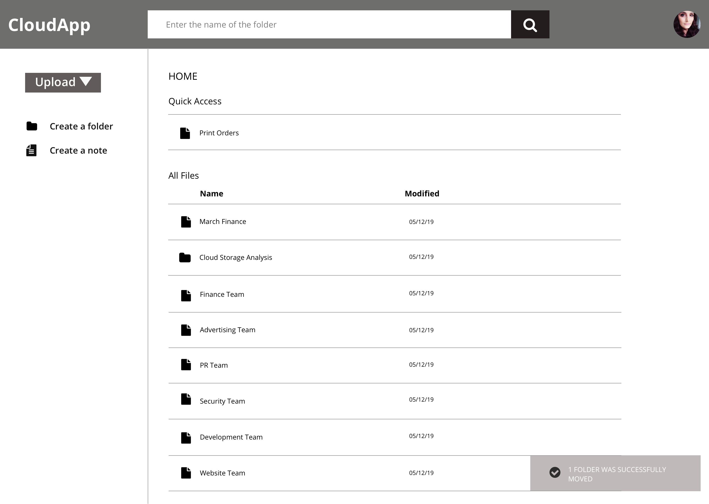
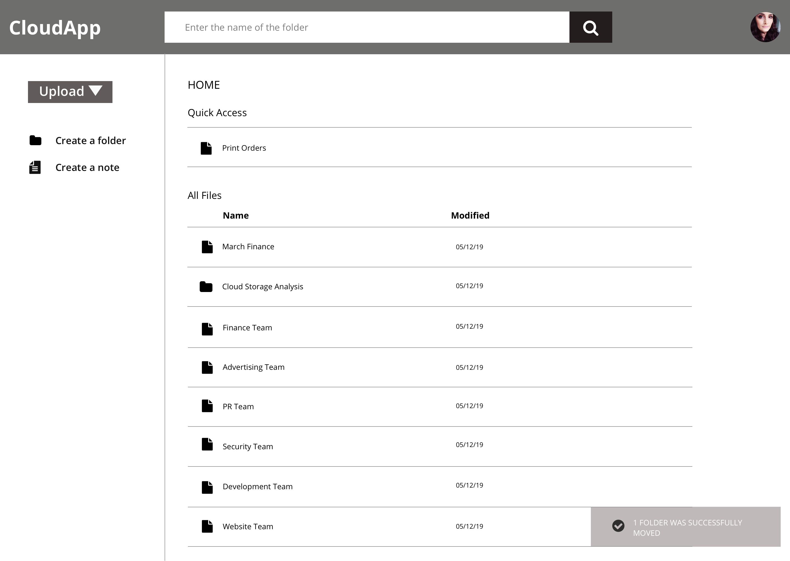

User Survey
I conducted a survey to understand the needs of users. This survey was sent out through social media accounts, subreddits, and friends.
The main purpose of this survey was to answer the following questions:
-
1. Ideal target group for a new cloud service product?
-
2. How are people using such a service now? and Why?
-
3. What features do they use regularly?
-
4. What problems can I solve with a new product?
Key Takeaway
The most critical thing that I learned during the survey was more than new features, users are concerned about the usability of basic features
When users were asked what they DO NOT like about their present service, these were their responses.
-
I didn't know how to create a folder for a long time
-
Difficult to understand, so I don’t use much
-
Saved it in the wrong folder and couldn’t find it
-
One drive wasn’t very intuitive to use
-
Right click for options wasn’t clear
-
Couldn’t share a file
All these led to the same problem - Unintuitive Design
Not having an intuitive user flow that helps the user to move from one step to the other without any friction is the concern among cloud storage users
Other Key Points
75% of the users accessed their cloud storage service through larger devices – Desktop, Laptop.
65% use the service for a work-related purpose.
75% chose Uploading a file and Sharing files as their main reasons to use this service at present.
Important features according to users - Uploading content, Organizing content, and Collaboration.


 
